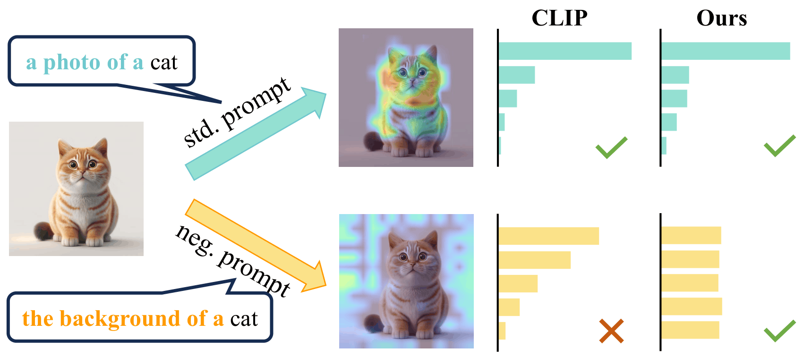
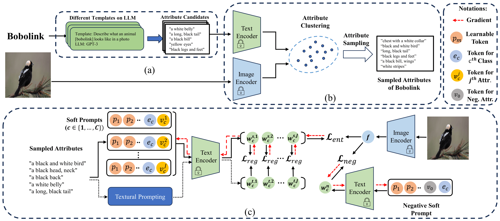
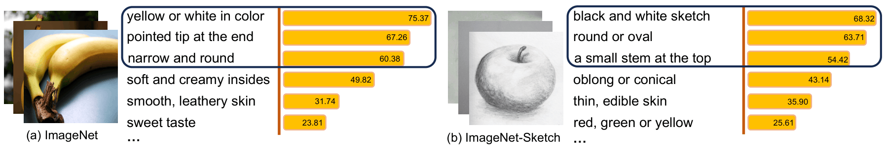
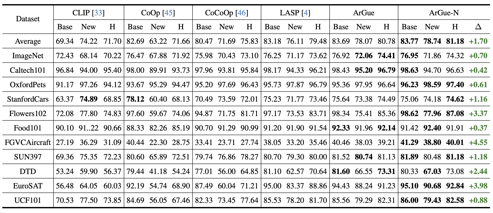
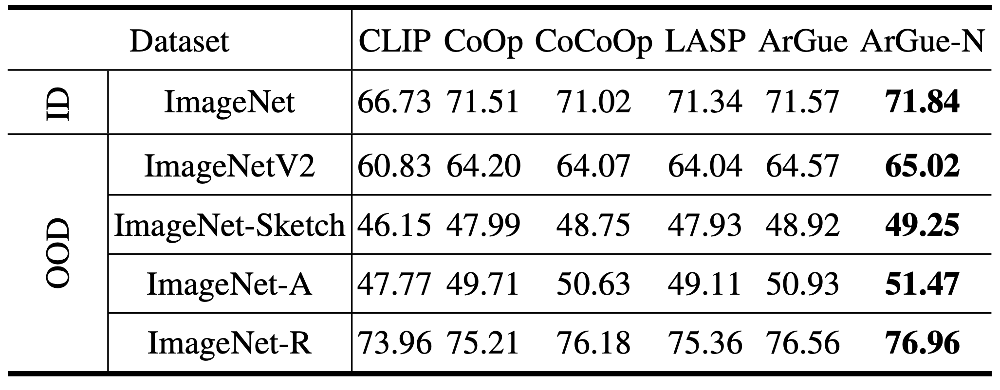
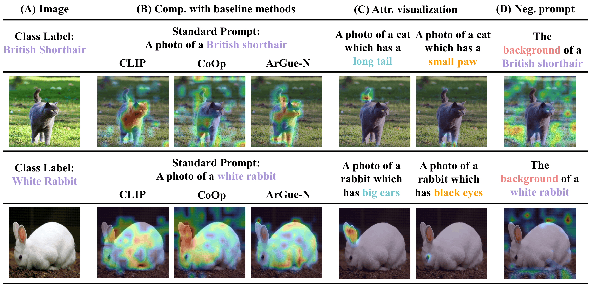

Abstract
Although soft prompt tuning is effective in efficiently adapting Vision-Language (V&L) models for downstream tasks, it shows limitations in dealing with distribution shifts. We address this issue with Attribute-Guided Prompt Tuning (ArGue), making three key contributions. (1) In contrast to the conventional approach of directly appending soft prompts preceding class names, we align the model with primitive visual attributes generated by Large Language Models (LLMs). We posit that a model's ability to express high confidence in these attributes signifies its capacity to discern the correct class rationales. (2) We introduce attribute sampling to eliminate disadvantageous attributes, thus only semantically meaningful attributes are preserved. (3) We propose negative prompting, explicitly enumerating class-agnostic attributes to activate spurious correlations and encourage the model to generate highly orthogonal probability distributions in relation to these negative features. In experiments, our method significantly outperforms current state-of-the-art prompt tuning methods on both novel class prediction and out-of-distribution generalization tasks.
Motivation: Spurious Correlations in Prompt Tuning

Standard soft prompt tuning methods learn shortcuts tied to spurious image features (e.g., background) rather than class-specific semantics, causing degraded generalization to novel classes and out-of-distribution data. For instance, when presented with a negative prompt such as the background of a cat, vanilla CLIP yields biased predictions by activating background spurious correlations. ArGue suppresses these shortcuts by training with visual attributes and enforcing uniform predictions under negative prompts.
Method: Attribute-Guided Prompt Tuning

The ArGue pipeline consists of three stages: (a) LLM attribute generation, (b) attribute sampling, and (c) attribute-guided soft prompt optimization with negative prompting.
-
Attribute-Guided Prompting: Instead of
[soft tokens] + [class name], we use[soft tokens] + [class name] + [attribute]. Attributes are generated by GPT-3 (J=15 per class) and logits are averaged across attributes at inference. - Attribute Sampling: Attributes are clustered in CLIP's text feature space, and the most image-relevant one per cluster is kept — filtering out non-visual (e.g., edible) and domain-irrelevant descriptions. N=3 attributes per class are retained for training.
- Prompt Regularization: Soft prompt features are pulled toward frozen text features from multiple natural language templates via a contrastive loss, preventing overfitting to training classes.
- Negative Prompting (ArGue-N): The model is trained to predict uniformly under a background-activating prompt (e.g., the background of a {class}), suppressing spurious correlations without per-class annotation.
Attribute Sampling

LLM-generated attributes vary in visual relevance. We cluster the attribute pool semantically and select the most image-aligned attribute per cluster, retaining only 20% of attributes while improving accuracy. This removes non-visual terms and domain-irrelevant descriptions (e.g., color attributes for grayscale sketch images).
Novel Class Prediction

- ArGue-N outperforms LASP by +1.70% in average harmonic mean across 11 datasets, setting a new state of the art.
- First prompt tuning method to surpass zero-shot CLIP on novel class accuracy in 10 out of 11 benchmarks.
- Largest gains on fine-grained datasets: +4.55% on FGVCAircraft and +3.98% on EuroSAT.
Out-of-Distribution Generalization

- ArGue-N consistently outperforms all baselines across all four OOD variants: ImageNetV2, ImageNet-Sketch, ImageNet-A, and ImageNet-R.
- Negative prompting suppresses background shortcuts that standard prompt tuning amplifies, with the largest gains on datasets where backgrounds are absent (e.g., ImageNet-Sketch).
Grad-CAM Visualization

ArGue-N precisely localizes the visual attributes mentioned in the prompt (e.g., long tail, small paw), while CLIP and CoOp activate large background regions. Under negative prompts, the model correctly suppresses background activations rather than biasing toward any class.
BibTeX
@inproceedings{tian2024argue,
title={Argue: Attribute-guided prompt tuning for vision-language models},
author={Tian, Xinyu and Zou, Shu and Yang, Zhaoyuan and Zhang, Jing},
booktitle={Proceedings of the IEEE/CVF Conference on Computer Vision and Pattern Recognition},
pages={28578--28587},
year={2024}
}